How to use this lesson
§0 · From last time. Module 1 gave us the agency dial and showed that high-dial systems trade predictability for adaptivity. We hand-waved the term "cost of agency" using expected-value language. Now we make it precise. The MDP (Markov Decision Process) is the standard formalism for agent decision-making, and even when we don't solve MDPs explicitly (LLM agents don't), the framework gives us the vocabulary to reason about what an agent is doing.
Business Scenario
HSBC, late one Wednesday.
Daniel Cho is reviewing Sherpa's break-classification logs from the pilot. He notices a pattern: when Sherpa investigates a break, it sometimes does 3 tool calls and confidently answers, and sometimes does 8 tool calls and still flags low confidence. The cost difference is 3× per ticket. Across 1,400 tickets/night, that's the difference between £140 and £420 in LLM costs.
"Can we put a budget on this? I want to say 'do at most 5 tool calls unless confidence is above 0.9' — but I have no idea whether that's the right rule. What's the principled way to decide?"
The honest answer requires modelling Sherpa's investigation as a sequence of decisions with costs and rewards. The standard formalism for that is the MDP.
Bridge to Topic
Daniel's question is a budgeted decision-theoretic question: when is the next tool call worth its cost, given everything observed so far? The MDP formalism — states, actions, transitions, rewards, discount — is what lets you reason about it without making it up.
Mind Map

Mermaid source
mindmap
root((MDP))
Components
State S
Action A
Transition T
Reward R
Discount gamma
Markov property
Future depends only on present
Not history
Policies
Deterministic
Stochastic
Optimal
Bellman
Value function V
Action value Q
Backup operator
Takeaway: an MDP is just five things. The art is choosing what counts as a "state."
Elaboration
4.1 Definition
An MDP is a tuple $\langle S, A, T, R, \gamma \rangle$:
- $S$ — set of states the world can be in
- $A$ — set of actions the agent can take
- $T(s' \mid s, a)$ — probability of next state given current state and action
- $R(s, a)$ — reward received for taking action $a$ in state $s$
- $\gamma \in [0,1]$ — discount factor (how much future rewards count vs immediate)
The agent picks a policy $\pi: S \to A$ (or $\pi: S \to \Delta(A)$ for stochastic policies) to maximise expected discounted reward.
4.2 The Markov property
The defining assumption: the next state depends only on the current state and action, not on the history of how we got here.
$$ P(s_{t+1} \mid s_t, a_t, s_{t-1}, a_{t-1}, \ldots) = P(s_{t+1} \mid s_t, a_t) $$
This is a modelling choice, not a physical law. If your "state" doesn't capture everything relevant, the Markov property is violated and the math breaks. For LLM agents, the trick is to define the state as everything in the agent's context window — then the Markov property holds trivially (the model only sees what's in context).
4.3 The value function
The value of a state under policy $\pi$ is the expected total discounted reward starting from that state:
$$ V^\pi(s) = \mathbb{E}\pi \left[ \sum{t=0}^\infty \gamma^t R(s_t, a_t) \mid s_0 = s \right] $$
The action-value function (Q-function) is similar but conditioned on the first action:
$$ Q^\pi(s, a) = R(s, a) + \gamma \sum_{s'} T(s' \mid s, a) V^\pi(s') $$
The optimal value function satisfies the Bellman optimality equation:
$$ V^(s) = \max_a \left[ R(s, a) + \gamma \sum_{s'} T(s' \mid s, a) V^(s') \right] $$
You can solve this by value iteration (repeatedly applying the operator on the right) or by policy iteration. For an HSBC break with ~5 classes and ~10 tool actions, the state space is small enough to solve exactly in milliseconds — if you have $T$ and $R$.
4.4 The catch (and why LLM agents matter)
In practice, you almost never have $T$ and $R$ for real-world tasks. You don't have a transition model of "what happens after Sherpa calls queryGL." You don't have a reward function for "Sherpa picked the right break category." This is why classical MDP solvers don't ship — the assumptions don't hold.
LLM agents bypass this by approximating the optimal policy directly via the model's learned heuristics. You don't compute $V^$; the model has implicitly absorbed enough examples to act as if it were following $V^$ in a reasonable neighbourhood of the task distribution.
The math is still useful because:
- It tells you what the agent should be doing if it were rational (a benchmark for evaluation).
- It gives you vocabulary for analysing failures ("Sherpa's behaviour suggests its implicit Q-values are wrong on counterparty mismatches").
- It lets you reason about cost/reward trade-offs (Daniel's budget question).
Problem Statement
Model Sherpa's break investigation as an MDP. Specifically:
- Define $S, A, R, \gamma$ for a single break.
- Compute the action-value of "call the GL one more time" vs "answer now" given the current belief is 0.78 on
amount_diffand 0.22 onstale_static. - State the budget rule Daniel should adopt.
Assumptions: each tool call costs $0.01 in tokens; a correct answer gives +$42 (the analyst time saved); an incorrect answer costs −$200 (the analyst has to redo and the bank's audit log shows a wrong automated decision).
Solution Walkthrough
State, actions, reward
- $S$ = the agent's belief over break categories (5 of them, summing to 1) plus a step counter.
- $A$ = {call_GL, call_counterparty, call_settlement, call_static, answer_class_i for i in 1..5}.
- $R(s, \text{tool})$ = $-0.01$ (token cost; we model only marginal cost per call).
- $R(s, \text{answer}_i)$ = $+42$ if class $i$ is correct, $-200$ if wrong, terminal.
- $\gamma$ = $1$ (no discounting needed within one investigation; horizon is short).
Value of "answer now"
Expected reward of answering with the most likely class:
$$ V_{\text{answer}}(s) = \max_i \left[ 42 \cdot b(c_i) - 200 \cdot (1 - b(c_i)) \right] $$
For our belief $b = (0.78, 0.22, 0, 0, 0)$:
$$ V_{\text{answer}} = 42 \cdot 0.78 - 200 \cdot 0.22 = 32.76 - 44 = -11.24 $$
Negative! Answering now would be a loss.
Value of "one more tool call"
A new observation will update the belief. Assume the GL call refines the belief to either $(0.95, 0.05)$ with probability 0.7 (confirms amount_diff) or $(0.20, 0.80)$ with probability 0.3 (flips to stale_static). Then the expected post-call answer value is:
$$ V_{\text{post-call}} = 0.7 \cdot V_{\text{answer}}(0.95) + 0.3 \cdot V_{\text{answer}}(0.20) - 0.01 $$
$$ V_{\text{answer}}(0.95) = 42 \cdot 0.95 - 200 \cdot 0.05 = 39.9 - 10 = 29.9 $$
$$ V_{\text{answer}}(0.20) = 42 \cdot 0.80 - 200 \cdot 0.20 = 33.6 - 40 = -6.4 ; (\text{best class is now the alternative; recompute as max}) $$
For belief $(0.20, 0.80)$, best is class 2: $42 \cdot 0.80 - 200 \cdot 0.20 = -6.4$. So we'd need yet another call.
$$ V_{\text{post-call}} \approx 0.7 \cdot 29.9 + 0.3 \cdot (-6.4) - 0.01 = 20.93 - 1.92 - 0.01 = 19.00 $$
So $V_{\text{call}} \approx 19.00$ versus $V_{\text{answer}} = -11.24$. Calling is worth it by ~$30 in expected value.
Daniel's budget rule
A principled budget rule is: answer when $V_{\text{answer}}(s) > V_{\text{best-tool-call}}(s)$. In practice the agent doesn't compute these explicitly, but the equivalent rule the LLM can act on is:
Answer when (max-belief × 42 − (1 − max-belief) × 200) > 0, i.e. when max-belief > 200/(42+200) ≈ 0.826.
So Daniel's rule: answer iff confidence ≥ 0.83; otherwise tool-call. With a max-step cap of 8 to avoid runaway.
This is derivable from the cost asymmetry: false-negatives are 4.76× more expensive than true positives, so you need to be 83% confident before committing.
Mathematical Foundation
7.1 The Bellman backup as the central operator
Value iteration applies the Bellman operator repeatedly:
$$ V_{k+1}(s) = \max_a \left[ R(s, a) + \gamma \sum_{s'} T(s' \mid s, a) V_k(s') \right] $$
This is a contraction mapping on $V$ with contraction factor $\gamma$, so it converges geometrically to $V^*$. For our example $\gamma=1$ but the horizon is finite (8 steps max), so we use finite-horizon value iteration which converges in 8 backups.
7.2 Why discount factor matters
For infinite-horizon problems, $\gamma < 1$ is needed for convergence. For agent design, $\gamma$ encodes patience:
- $\gamma \to 0$ — myopic agent, takes immediate rewards
- $\gamma \to 1$ — far-sighted agent, willing to invest in long sequences
LLM agents implicitly behave with high $\gamma$ on tasks where the goal is far away (research, planning) and low $\gamma$ on tasks where the goal is near (Q&A). The model's training shapes this implicitly; you don't set it.
7.3 The optimal policy
Once you have $V^*$, the optimal policy is:
$$ \pi^(s) = \arg\max_a \left[ R(s, a) + \gamma \sum_{s'} T(s' \mid s, a) V^(s') \right] $$
This is the greedy policy with respect to $V^$. It's optimal because $V^$ already accounts for the value of future actions.
Technical Deep-Dive
8.1 State design is everything
The hardest decision in MDP modelling is what counts as a state. For Sherpa:
- Bad: $s$ = the literal text of the break message. State space is infinite; nothing generalises.
- Worse: $s$ = the index of the break in tonight's batch. Markov property violated (the index doesn't tell you anything about the break).
- Good: $s$ = the agent's current belief over break categories + step count. Finite-dimensional, Markovian.
- Better: $s$ = belief + step count + which tools have been called. Richer state but quickly grows.
Choose the smallest state that captures everything the next-action choice depends on. No more, no less. This is the "feature engineering" of MDP modelling.
8.2 Reward shaping
Reward functions for real tasks are usually a hand-tuned combination of:
- Outcome reward: did the agent answer correctly? (Sparse, often delayed)
- Process reward: did the agent take sensible intermediate steps? (Dense, easier to optimise but risks gaming)
- Cost penalty: tokens, latency, dollars (Always negative; sets the urgency)
For LLM agents, the reward function is mostly implicit (encoded in the prompt's success criteria) but you can make it explicit in the eval harness (Module 8).
8.3 When the MDP framework breaks
Three cases where the MDP isn't the right model:
- Partial observability (the agent can't see the true state — only observations). Use a POMDP (Lesson 2.2).
- Multiple agents (your decisions depend on what other agents do). Use a Markov game (Module 6).
- Non-stationary environment (the world changes underneath you). Use a contextual bandit or a learning-to-learn formulation (out of scope for this course).
What This Unlocks
- Lesson 2.2 extends the MDP to POMDPs — what you actually need for LLM agents, because the true state is never fully observed.
- Lesson 2.3 brings in Bayesian reasoning, which is what powers the belief updates in POMDPs.
- Module 4 uses the MDP frame to define Sherpa's termination policy precisely (the "answer iff confidence > 0.83" rule comes directly from §6).
- Module 8 uses MDP-derived metrics to design the eval harness — regret (gap from optimal policy), expected value per task, value of information per tool call.